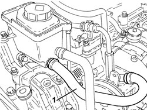
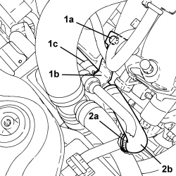
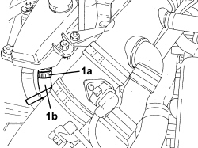
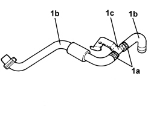

4130B34 SUPPLY PIPE FROM FLUID RESEVIOR TO POWER STEERING PUMP R R
- Path
- Procedures > 41 STEERING UNIT > 4130 POWER STEERING > 4130B POWER STEERING HYDRAULIC SYTEM > 4130B34 SUPPLY PIPE FROM FLUID RESEVIOR TO POWER STEERING PUMP R R
- Kind
- repair procedure (removal / refitting; the operation number is the code)
- Applies to
- engines: 1.9 JTS, 2.2 JTS, 3.2 JTS; all production periods
- Interactive page
- https://sloeber94.github.io/elrnDB/#/939010824
Applies to: engines: 1.9 JTS, 2.2 JTS; all production periods
 Removing
Removing
 Refitting
Refitting- Draw off the power assisted steering fluid from the reservoir using a suitable syringe.
1. Loosen the collar and remove the supply pipe from the reservoir to the power assisted steering pump.

Applies to: engines: 1.9 JTS, 2.2 JTS; all production periods
Refitting
Removing- Remove the supply pipe from the reservoir to the power assisted steering pump.
Op. 0010T71 POWER STEERING FLUID CHECK LEVEL AND TOP UP IF NECESSARY
Applies to: engines: 3.2 JTS; all production periods
Removing
RefittingOp. 1016A10 SOUND-PROOFING COVER - R.R
- Draw off the power assisted steering fluid from the reservoir using a suitable syringe.
1. Undo the bolt (1a) securing the intermediate connector (1b) for the supply pipe from the fluid reservoir to the power assisted steering pump (1c).
2. Loosen the band (2a) and disconnect the supply pipe from the fluid reservoir to the power assisted steering pump (2b), pump side.

Applies to: engines: 3.2 JTS; all production periods
1. Loosen the band (1a) and disconnect the supply pipe from the fluid reservoir to the power assisted steering pump (1b), reservoir side and remove it.

Applies to: engines: 3.2 JTS; all production periods
1. If necessary, loosen the bands (1a) and separate the pipes (1b) from the intermediate connector (1c).

Applies to: engines: 3.2 JTS; all production periods
Refitting
Removing- Connect the pipes to the intermediate connector and secure them using the bands.
- Place the supply pipe from the fluid reservoir to the power assisted steering pump, reservoir side in position and secure it using the band.
- Connect the supply pipe from the fluid reservoir to the power assisted steering pump, pump side and secure it using the band.
- Tighten the bolt securing the intermediate connector for the supply pipe from the fluid reservoir to the power assisted steering pump.
Op. 1016A10 SOUND-PROOFING COVER - R.R
Op. 0010T71 POWER STEERING FLUID CHECK LEVEL AND TOP UP IF NECESSARY
Topics linked from this page (3)
- 0010T71 POWER STEERING FLUID CHECK LEVEL AND TOP UP IF NECESSARY
- 0010T75 HYDRAULIC POWER STEERING SYSTEM BLEED AIR
- 1016A10 SOUND-PROOFING COVER - R.R